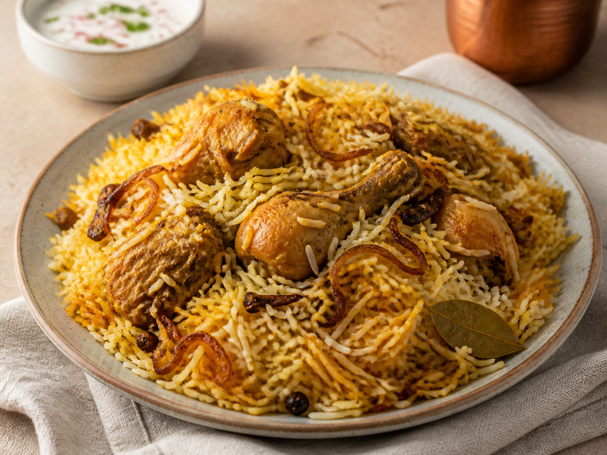

← All recipes
Indian · Easy
One-Pot Chicken Biryani
Fragrant spiced rice and tender chicken made in one dependable pot.

Let’s cook
Step by step
Rinse rice in a sieve until the water is mostly clear; drain well.
Mix chicken with yogurt, spice blend, and salt.
Heat oil in a heavy pot. Cook onion for 8 minutes until golden; set half aside.
Add chicken and cook 4 minutes, turning once.
Scatter rice over chicken and pour in stock. Do not stir.
Bring to a simmer, cover tightly, and cook on very low heat for 18 minutes.
Turn off heat, rest covered for 10 minutes, then fluff and top with reserved onion.
Read this firstIdiot-proof tip
The covered rest is part of cooking—do not lift the lid early.